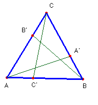
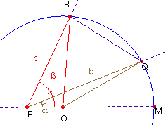

Problema 87.-Dado un triángulo ABC, y un punto A’ sobre el lado BC. Tomemos los puntos B’ y C’ sobre AC y AB respectivamente de forma que AA’ = BB’ = CC’. Demuestra que si BA’= CB’= AC’ entonces ABC equilátero.
(Olimpiadas, prueba de clasificación segunda ronda, 1999, Alemania).
Solución.- Supongamos que el triángulo no es equilátero, por ejemplo que las relaciones entre sus lados son a < b < c. Para los ángulos se tendrá, en consecuencia a= A < b= B < g = C.

Los triángulos que se forman dentro de ABC con los puntos A’, B’ y C’ tienen dos lados iguales, l = AA’ = BB’ = CC’ y m = BA’ = CB’= AC’.Vamos a fijar m y l, y dibujar dos de estos triángulos. Para ello tomo una circunferencia de centro O y radio l. En un diámetro de la misma pongo el punto P, tal que m = OP.
Tomo sobre la circunferencia dos puntos Q y R, tales que los ángulos QPO y RPO sean respectivamente iguales a los ángulos a = A y b = B del triángulo dado. Los segmentos PQ y PR son, necesariamente iguales a los lados b y c del triángulo ABC.
Como el ángulo POQ, es mayor que el POR, (debido a que a < b) deducimos que sus lados opuestos
guardan también esta relación (al ser iguales los otros dos), así pues, nos encontramos con que b > c. (*)

Como habíamos supuesto inicialmente lo contrario, sólo podemos conciliar estos hechos, haciéndolos iguales. Pero si b = c, y por tanto, b = g para los ángulos opuestos, los triángulos ACC’ y BAA’ son iguales, por tener sus tres lados iguales.
Al lado l = AA’= CC’ se oponen los ángulos b y a, que también han de ser iguales y como ya teníamos que b = g. resulta que ABC es equilátero. c.q.d.
(*) En el triángulo isósceles OQR son iguales los ángulos de la base RQ, por tanto, áng(PQR) < áng(OQR) = áng(ORQ) < áng(PRQ); en consecuencia en el triángulo PQR, el lado b opuesto al ángulo PRQ es mayor que el lado c opuesto al ángulo PQR.. (Proposición 24 del libro I de los Elementos de Euclides.)